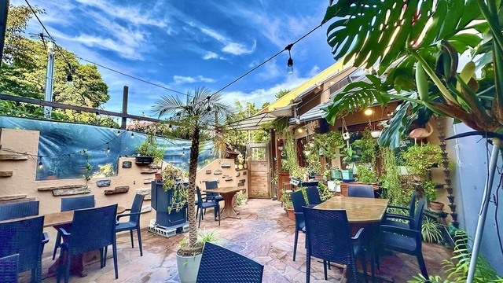

Stop 01
📍 Kenny's House cafe Izukogen Honten
Lunch as a pause
进入伊豆后的第一顿饭。坐下来慢慢吃，是整趟旅程节奏被“放下来”的开始。
12:00–13:00 · Lunch as a pause
春天的伊豆，不只是看风景。它是一条从城市出发，逐渐靠近自然、季节与火山仪式的海岸线。
DAY 1 让自然慢慢展开；DAY 2 先看烧山，再用一座美术馆把旅程收束。
池袋 → 伊豆高原午饭 → 伊豆海洋公园 → 城ヶ崎海岸 → 河津樱 → 东伊豆住宿（温泉＋晚餐）
进入伊豆后的第一顿饭。坐下来慢慢吃，是整趟旅程节奏被“放下来”的开始。
12:00–13:00 · Lunch as a pause
木栈道、礁石与浪声。不需要久留，只需让海风改变你的呼吸方式。
13:30–14:30 · First contact with the sea
吊桥悬在断崖之间，风很大但视野完全打开。建议只走短线，留体力给傍晚的樱花。
15:00–16:00 · Walking on volcanic time
建议把晚餐交给旅馆：泡汤、吃饭、躺平。这样第二天的烧山才会更从容。
After 18:30 · Onsen + dinner
东伊豆住宿 → 仙人掌动物园周边烧山 → 动物园 → 伊豆高原午饭 → MOA美术馆 → 东京
早餐后提前出发，在仙人掌动物园一带远景观看烧山。远景比近景更完整：轮廓与烟线会一起出现。
09:00 · The ritual moment
看完火之后，让节奏慢下来。卡皮巴拉温泉与温室空间，是情绪自然落地的缓冲段。
10:30–11:30 · Slow down after fire
回程前最重要的一顿饭。不赶时间、不将就，是让这趟伊豆在记忆中“好好结束”的关键。
12:30–13:30 · The last good meal
把建筑留在最后。自动扶梯、光线与海景露台，为旅程留下安静而清晰的尾声。
14:30–16:00 · Architecture as an ending
不追求“把伊豆玩完”。把撤离时间当成体验的一部分：带着余温回到东京。
After 16:00 · Drive back
不是一个人完成的旅程
G师傅 · Route planning
艾师傅 · only one E drievr
张师傅 · Driver/Calm energy
发师傅 · Rich Man
Everyone · Weekend memories